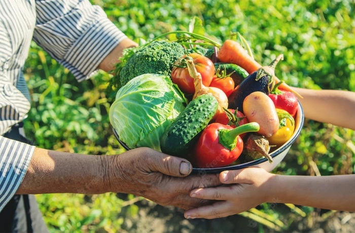

Segurança Alimentar
De acordo com a Organização das Nações Unidas para a Alimentação e Agricultura (FAO), segurança alimentar é uma "situação na qual todas as pessoas, em todos os momentos, têm acesso físico, social e econômico a recursos suficientes, seguros e alimentos nutritivos que atendam às suas necessidades dietéticas e preferências alimentares para uma vida ativa e saudável". Basicamente ela apresenta o direito à alimentação saudável.
Insegurança Alimentar
A insegurança alimentar ocorre quando as pessoas não tem acesso à segurança alimentar. Muitos confundem a fome com a insegurança alimentar, pois as duas violam o direito humano de ter acesso a uma alimentação saudável, porém, uma pessoa que sofre de fome, pode se encontrar em uma situação de Insegurança, já uma pessoa nessa condição não necessariamente sofre de fome, pois existe vários graus de intensidade e diversas dimensões para esse problema.
A insegurança alimentar pode ser classificada em três níveis: a leve, caracterizada pelo receio quanto à quantidade e qualidade dos alimentos disponíveis, com preocupação de passar fome no futuro; a moderada, quando a família já enfrenta limitações reais tanto na qualidade quanto na quantidade do que consome; e a grave, marcada pela ausência de alimentos suficientes, resultando diretamente na fome.
Dimensões da Insegurança Alimentar
Disponibilidade
Capacidade do sistema agrícola atender a demanda de alimentos. Ela depende da situação agroclimáticas, e fatores socioeconômicos que determina onde e como os agricultores atuam.
Instabilidade
Possível risco de perda do acesso aos recursos necessários para a alimentação. Os riscos podem ser falta de renda ou reserva insuficiente. Algumas das causas pode ser a situação climática, pois os agrícolas sem terra podem ficar sem salário por causa da escassez de chuva ou o aumento do custo de vida.
Acesso
Distribuições de recursos e direitos para aquisição adequada de alimentos nutritivos. A falta de acesso pode ser devido a situação de pobreza ou por causa de ações de monopólios ou desvio de dinheiro público.
Utilização
Inclui todos os aspectos de segurança alimentar e qualidade da nutrição. Suas subdimensões são relacionadas à saúde, como condições sanitárias em toda a cadeia alimentar. Por mais que alguém esteja recebendo uma quantidade adequada de comida, isso não importa quando a pessoa sempre adoece ao ingerir esses alimentos.
Em 2022 foi publicado o inquérito nacional sobre insegurança alimentar no contexto da covid-19 no Brasil, neste documento analisa dados coletados entre novembro de 2021 e abril de 2022, a partir da realização de entrevistas em 12.745 domicílios, em áreas urbanas e rurais de 577 municípios dos 26 estados mais o DF.
Os resultados mostram que 33,1 milhões de brasileiros estão passando fome e mais da metade dos brasileiros vive algum grau de insegurança alimentar.